항공모함 관련 잡담 (8/19)
게시: 2021-08-19T06:30:29+09:00
<경항모 만들어서 손해보는 일 따윈 없다> 아래 두 사진은 같은 배. 원래 미국에서 상선 기반으로 만든 Bogue급 호위항모였으나 영국 해군에 공여되어 호위항모 HMS Searcher (1만4천톤, 18노트)로 활약. 전후 그리스에 팔려 SS Captain Theo로 한때 해운왕국 그리스의 부흥에 기여. HMS Searcher는 1945년 5월 4일 노르웨이의 U-boat 기지를 공습하여 U-boat 지원함 2척과 U-boat 1척을 격침한 3척의 호위항모 중 1척. 이 공습이 영국 해군 항공대 최후의 공습 작전. 왜냐하면 저 공습은 5월 4일 독일해군 항복 이후 벌어진 공습이라서... 영국 조종사 4명 사망, 독일 해군 150명 사상.
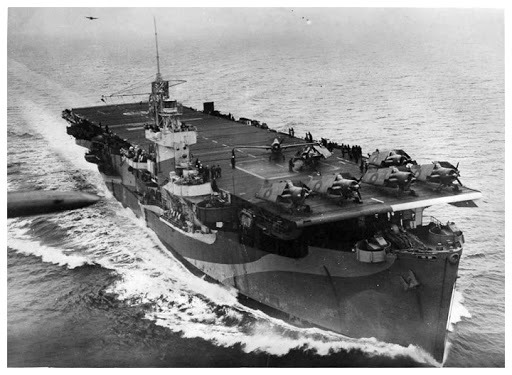 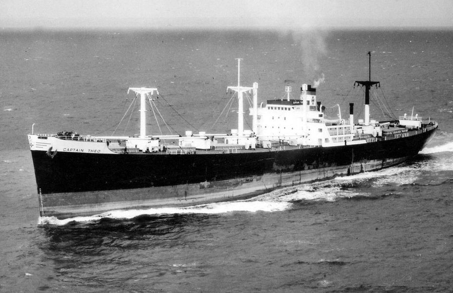
<다 격추해버려!> 1956년 냉전이 한창이던 대서양 공해상. 훈련중인 미해군 제6함대 항모전단을 향해 당시 소련의 최신예 폭격기 Tu-16 (첫번째 사진) 2대가 똑바로 날아옴. 당시 함대사령관이던 Charles Brown 제독은 굉장히 공격적인 군인이었고 정치적으로 매우 부적합한 명령을 내림.
"격추시켜!"
다행인지 불행인지 우연인지 필연인지 이 명령은 CAP(Combat Air Patrol)을 치던 미해군 함재기들에게는 전달되지 않았고 브라운 제독께서 제 정신을 차리고 "아까 명령 취소"라고 말씀하시고 나서야 정상적인 무선통신이 재개됨. (알고보면 무척 합리적인 미해군)
같은 해 수에즈 운하 갈등을 둘러싸고 영불 양국의 이집트 침공 작전인 Musketeer 작전 때 미해군은 항모를 포함한 영불 함대를 쫓아다니며 견제하는 역할을 했는데 이때도 브라운 제독은 "저 영국 전투기들 다 격추해버려!" 라는 명령을 내리셨고 그때도 희한하게 무선통신에 문제가 생겨 실행에 옮겨지진 않았다고... ** 브라운 제독께서는 나중에 해군참모총장까지 올라가심 미해군 항모전단 근처에 허락받지 않은 항공기는 얼씬도 못할 것 같지만 (당연히) 공해상에서는 누구나 그 위로 날아갈 수 있음. 소련 폭격기들도 자주 미해군 항공모함 바로 위로 날아감. (두번째 사진은 Kitty Hawk 위를 날아가는 Tu-95) 물론 미해군 전투기들이 위협적으로 따라붙음. 서로 상대방의 전파 신호 등을 수집하기도 하고 적의 탐지 능력을 테스트해보기 위해 이런 짓들을 함. 반대로 미해군 항공기도 소련 항공모함 위로 날아다니며 세번째 사진을 찍기도 함.
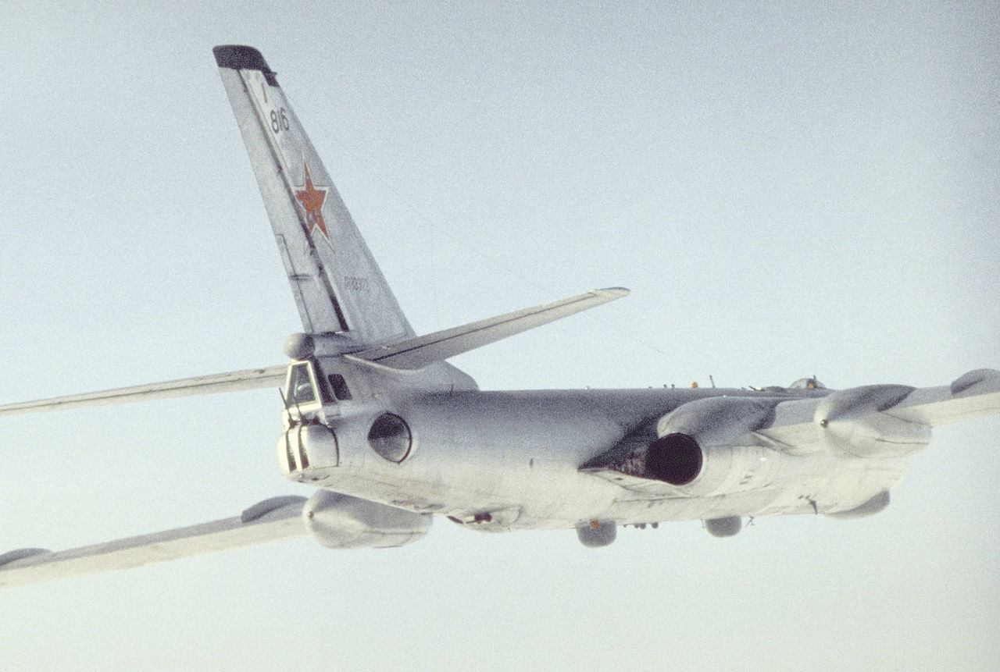 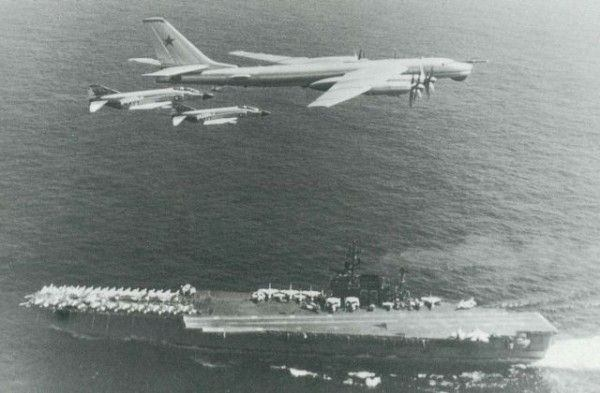 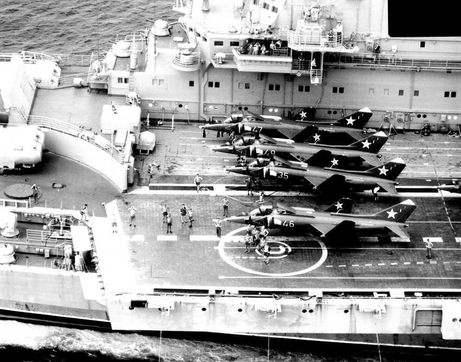
<역시 떡대가 중요> A-1 Skyraider가 프롭기치고는 폭장량이 대단하다고 생각했는데 A-4 Skyhawk보다 1톤이 더 무겁고 폭도 훨씬 넓음. 역시 떡대가 좋아야...
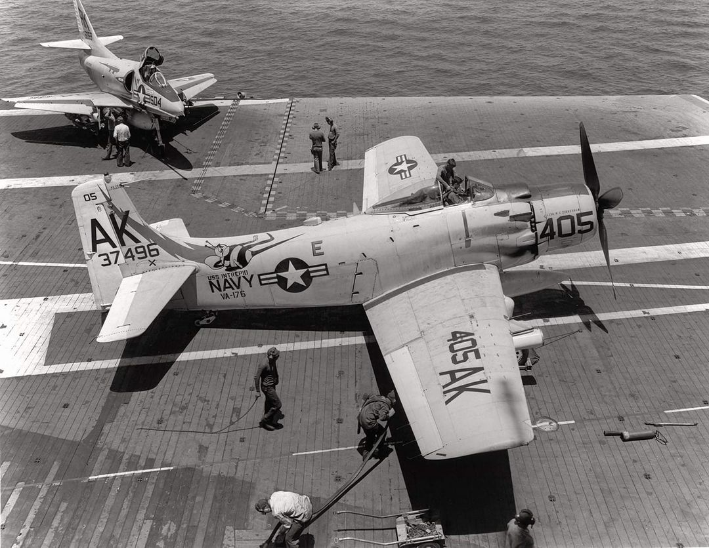
<양덕들 모두 감탄하는 사진> HMS Ark Royal (1950년 진수된 Audacious급 항모, 4만3천톤, 31노트)의 각잡은 함재기 정렬. 뒤부터 Gannet, Sea Hawk, 맨 앞에 있는 후퇴익은 Sea Venom.
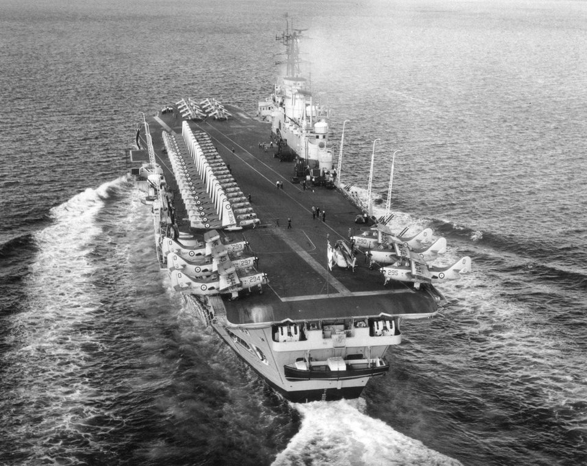
<1944년 옥천(?) 물류창고 사진> 좌 F4U Corsair, 우 F6F Hellcat. 1944년 태평양으로 실어내기 전 사진.
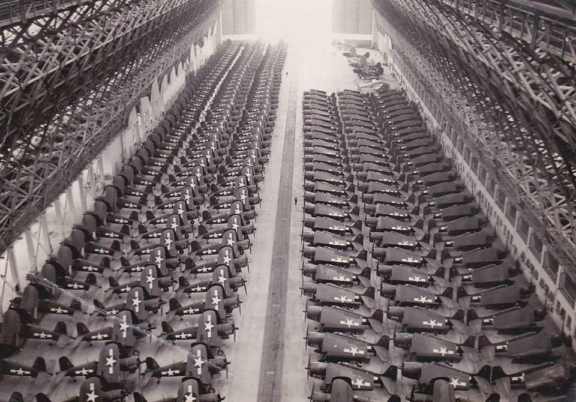
<수직 이착륙을 위한 노력> 1954년 Convair XFY Pogo * 몇가지 기술적 문제 외에도, 착륙할 때 조종사가 뒤를 돌아보며 착륙하느라 목디스크 걸릴 판이라 때려쳤다고
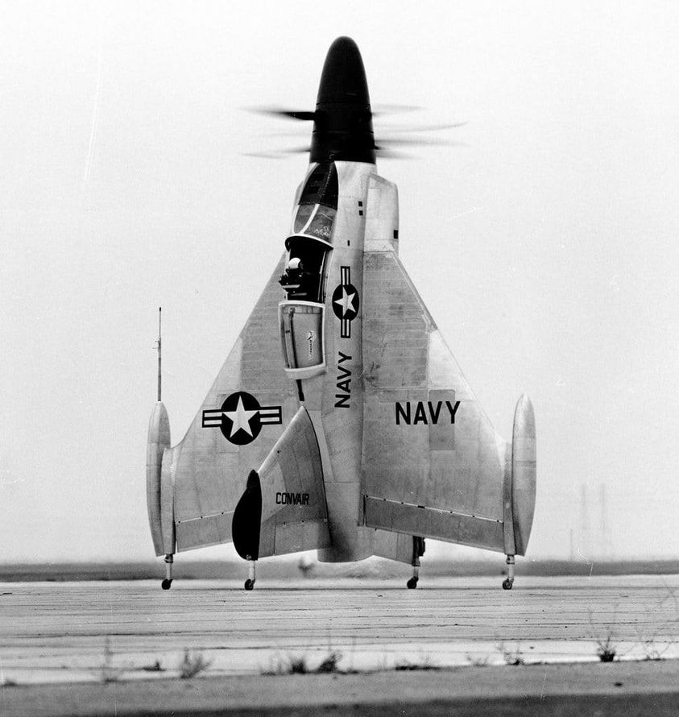 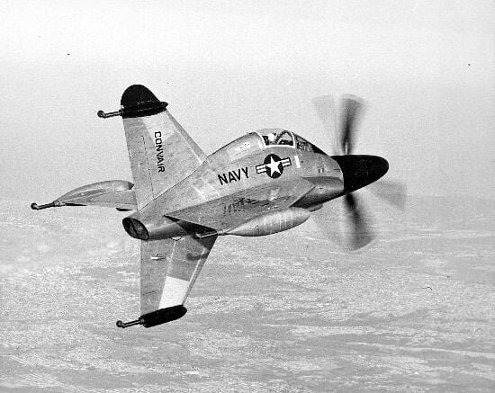
<탄도탄 공격 쯤이야>
냉전 시대 서구가 수직 이착륙기 개발에 열중했던 이유는 소련과의 전면전시 공군기지에 날아들 미쓸 공격을 막아낼 방법이 없었기 때문.
2020년 1월, 이란 솔레이마니 암살 사건에 보복하기 위해 이란이 이라크 내 미군이 사용 중인 공군 기지 2곳에 십여발의 탄도탄 공격을 감행. 미군은 이란으로부터 사전 경고를 받았으나 그 공격을 막지 못하고 속절없이 당해 110명의 부상자를 내고 몇 채의 건물과 항공기를 파괴당함.
** 부칸과의 전면전에서 생존성은 공군 기지보다 경항모가 더 좋다.
** 아래 사진에서 동그라미 쳐진 곳이 피격 장소.
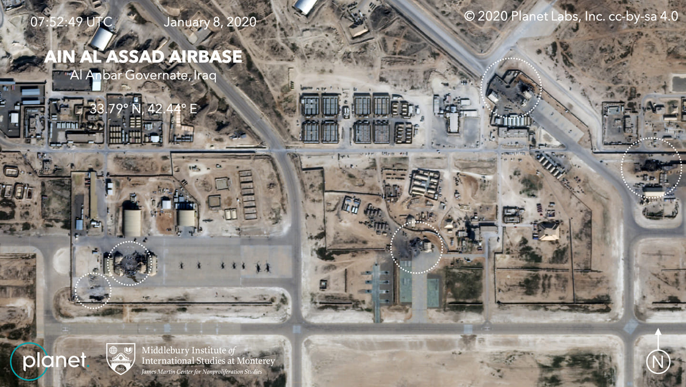
<장갑 항모가 좋은가 비장갑 항모가 좋은가?> (저는 결코 아니지만) 밀덕들 사이의 쟁점 떡밥 하나가 '장갑항모 vs. 비장갑항모'. 비행갑판에 3인치 장갑을 입힌 영국해군 항모들은 피폭되더라도 피해가 적었음. 그에 비해 비행갑판에는 장갑이 없었던 미국 및 일본 항모들은 딱 1방의 폭탄에 작전불능이 되거나 침몰하는 경우도 있었음. 그것만 보면 장갑항모가 옳겠으나, 대신 장갑항모는 그만큼 함재기 탑재량이 적었으므로 상대적으로 상공 방어가 좀더 취약했음. 비장갑이었던 미해군 Essex급 항모들을 옹호하는 밀덕들은 'Essex급 항모들은 그만큼 피격 횟수가 적었다'라고 주장. 어느쪽이 맞는 말인지는 논쟁이 있을 뿐 정답은 없음. 역사에 'if'는 아무 쓸모도 없고 입증이 불가능하기 때문. * 사진은 피격된 장갑항모 HMS Illustrious의 갑판.
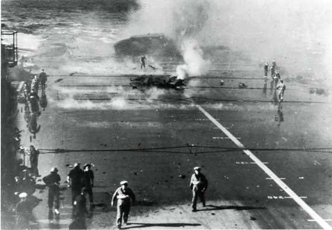
<뚜껑에 붙었는데요> USS Enterprise 격납고. 1941년 여름, 하와이. 비행갑판에 장갑이 없는 대신 격납고 공간이 럴럴하여 저렇게 예비용 함재기를 천정에 매달아 놓았음.
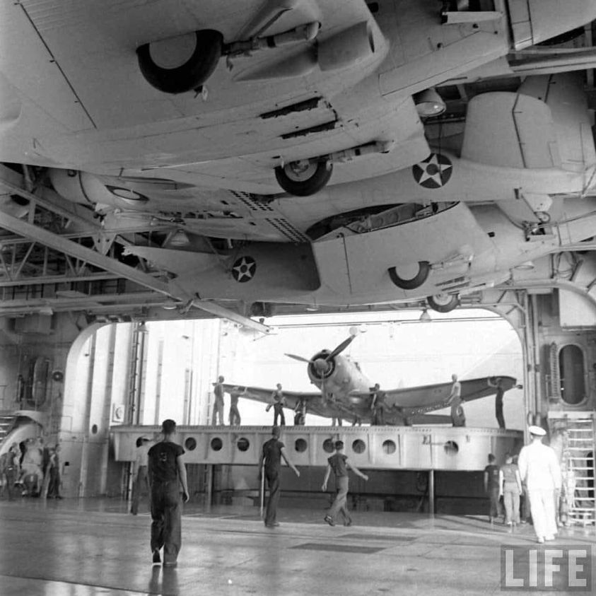
<여기 층간 소음 없어요?> 당연히 항모에는 야간 근무 이후 주간에 잠을 자야 하는 승조원들이 존재. 그런데 이 친구들의 좁은 침상은 격납 갑판 바로 아래. 그러니까 비행갑판 두 칸 아래. 15톤짜리 제트 전투기가 강철 갑판 위에 300 km/h의 속도로 우당탕 착함하는 소음 때문에 잠을 못 자지 않느냐? 라는 질문에 대한 답은 "착함 소음은 그런대로 괜찮다. 가장 시끄러운 것은 갑판 위에 묶인 채로 제트 엔진 테스트 하는 경우 있는데 그 소리는 정말 온 배 안에 쩌렁쩌렁 울린다"
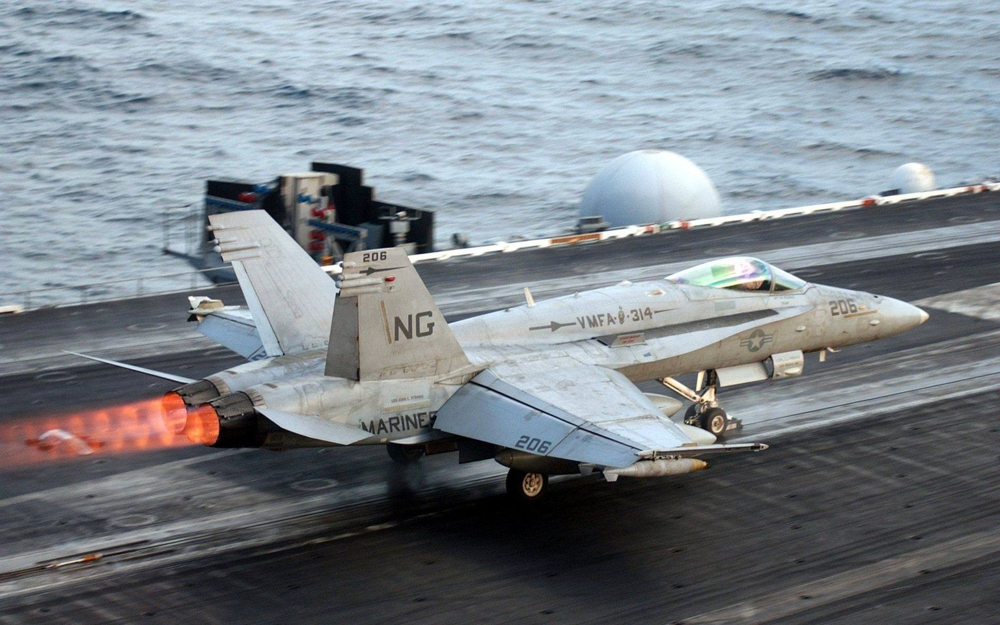
<작은 나라도 항모는 가질 수 있다> 우리나라를 아시아의 이탈리아 또는 아시아의 아일랜드라고 하는 분들이 있지만, 우리나라는 우리나라만의 역사와 특색이 있으므로 굳이 유럽 어느 나라와 비교하는 것은 무의미. 그러나 굳이 비교를 한다면 우리나라는 아시아의 네덜란드 아닌가 싶은데, 이유는 아래와 같음 1. 영-프-독 3대 강국 사이에 낀 소국 2. 좁은 국토에 (북해 석유 빼고) 자원은 없고 인구만 많음 3. 제조업 발달 네덜란드가 대놓고 독일 욕하는 거 보셨음? 이유는 대독일 무역 비중이 크고 특히 최대 흑자 $64 billion이 독일로부터 나기 때문. 그리고 그렇게 작은 네덜란드도 경항모는 있었음. HNLMS Karel Doorman (R81, 2만톤, 25노트) 원래 1943년 진수된 영국 경항모 HMS Venerable이었는데 전후 네덜란드로 매각되어 카렐 도어만이 됨. 1960년 식민지이던 서부 뉴기니가 독립할 때 인도네시아에 대한 무력시위를 위해 파견. 당시 카렐 도어만에는 사진에 보이는 것처럼 프로펠러기인 Fairey Firefly (두번째 사진) 등을 함재기로 탑재하고 있었는데, 실제로 인도네시아에 저걸로 공습을 가했다면 큰일 났을 듯. 당시 인도네시아는 소련과 긴밀한 관계라서 소련은 최신예 전투기인 MiG-21은 물론 카렐 도어만을 잡으라고 Tu-16 Badger 폭격기와 대함 미사일까지 지원해준 상태. 인도네시아는 당시 큼직한 먹이인 이 카렐 도어만이 사정거리 안에 들어오기만 기다리고 있었음. 다행히 그 전에 양국 간에 휴전 조약이 맺어져서 대형 참사는 벌어지지 않음. 1964년, 결국 막대한 운영 유지비를 견디다 못한 네덜란드는 1970년대 초에 이 항모를 퇴역시키기로 결정. 그러나 1968년 보일러실 화재로 인해 그냥 조기 퇴역을 결정. 이 항모는 아르헨티나로 팔려가 ARA Veinticinco de Mayo라는 이름의 아르헨티나 항모가 되었고, A-4 Skyhawk를 탑재하고 1982년 포클랜드 전쟁에서 영국 함대를 공격 직전까지 감. 그러나 영국 함대를 찾지 못해 공격 직전에 포기. 결국 돈만 까먹다 1990년대에 퇴역.
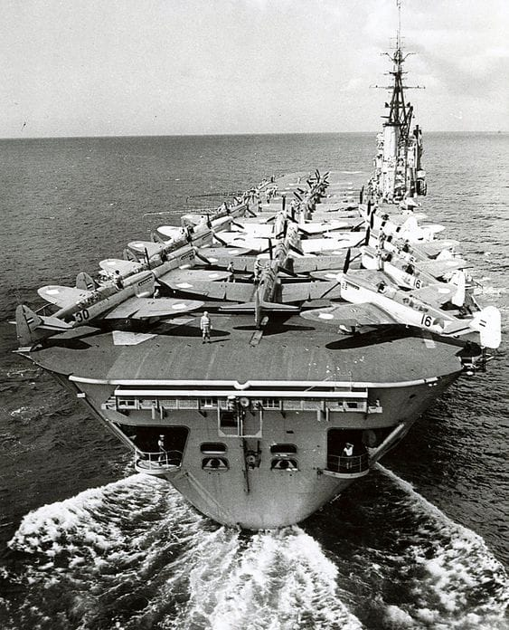
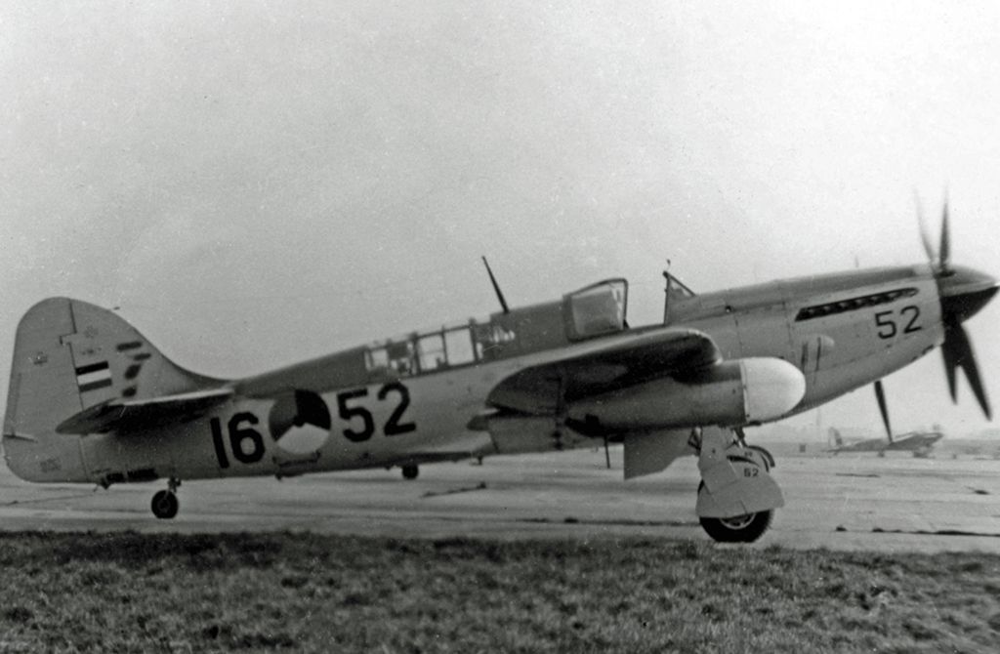